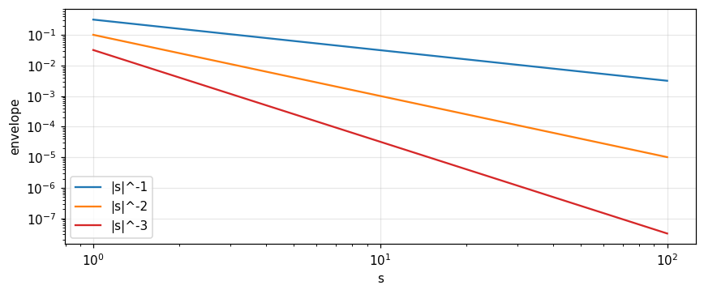
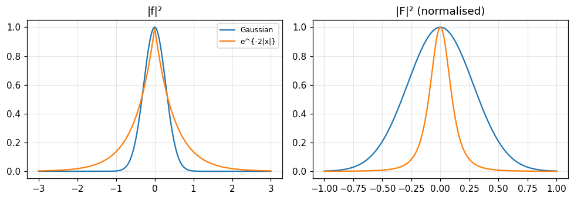

Area, moments, centroid, variance, smoothness, equivalent width, the uncertainty relation, finite differences, running means and the central-limit theorem: each property in one domain has a partner in the other.
State and use the pairs of properties: area and central ordinate, nth moment and nth derivative at the origin, centroid, variance.
Relate the smoothness of a function to the decay rate of its transform (log-log slope, decibels per octave).
Compute equivalent width, autocorrelation width and mean-square width, and understand the uncertainty relation.
Use finite differences and running means, and explain the central-limit theorem through transforms.
Use the inequalities: upper bounds on ordinate and slope, and Schwarz's.
Use the buttons, the dots or the ← → keys to move between slides.
PART 1/5
01
Area, moments and the centroid
Situation: A function and its transform as two domains, "upper" and "lower", each function accompanied by a "shadow" in the other.
Complication: We often need one feature of a function without inverting the transform and integrating in full.
Resolution: The area equals the central ordinate of the transform; the nth moment is proportional to the nth derivative of the transform at the origin.
Area and central ordinate
The first moment and the centroid
Moment of inertia and the nth moment
1/5 · Area, moments and the centroid
Two domains
We may think of functions and their transforms as occupying two domains, sometimes called the upper and the lower, as if functions circulated at ground level and their transforms in the underworld (Doetsch, 1943). Each function is accompanied by a counterpart, a shadow in the other domain, associated uniquely with it through the Fourier transform and changing as the function changes. In the illustrations functions are on the left and transforms on the right (Bracewell, p. 151).
1/5 · Area, moments and the centroid
The theorems are pairs of operations
The earlier theorems are a list of pairs of simultaneous operations, one in the function domain and one in the transform domain. Compression of the abscissas in the function domain means expansion of the abscissas and contraction of the ordinates in the transform domain; translation means a twisting; convolution means multiplication. We now consider pairs of corresponding properties: the area under a function and the central ordinate of its transform are such a pair (pp. 151 to 152). The purpose: when only a feature of a function is needed, cross to the other domain and read the answer directly.
1/5 · Area, moments and the centroid
The definite integral
The definite integral of a function from -\infty to \infty equals the value of its transform at the origin, since F(0)=\int f(x)e^{0}dx (p. 152). By symmetry the area under the transform equals f(0). Measured with f=e^{-x}H(x): the area 1 equals F(0) = 1, and the area under F equals 0.5, the mean of f on the two sides of the jump at 0.
Any operation on f(x) that leaves its area unchanged, say translation, leaves the central ordinate of the transform unchanged; for translation this agrees with the shift theorem since e^{-i2\pi as}F(s) at s=0 equals F(0). A harder example: split f at x=0 into two halves and push them apart by 2a, giving f(x-a)H(x-a)+f(x+a)H(-x-a). The area is unchanged so the central ordinate of the transform is too; since the central ordinate of the function is now zero, the area of the transform must be zero (p. 152). Measured with f=e^{-|x|}, a=0.5: the area is 2, and the area of the transform is 0.
1/5 · Area, moments and the centroid
The first moment
By analogy with mass distribution along a line, the first moment about the origin is \int xf(x)dx. Theorem: the first moment equals -(2\pi i)^{-1} times the slope of F(s) at s=0 (pp. 153 to 154). It follows from the derivative theorem: \int(-i2\pi x)f(x)e^{-i2\pi xs}dx=F'(s). Measured with f=e^{-x}H(x): \int xf= 1, and F'(0)/(-2\pi i) = 1.
A function whose first moment is zero has a transform with zero slope at its origin, and conversely. Furthermore, if a function has zero slope at the origin and is not zero there, its transform has its centre of gravity at the origin (p. 155). Measured: the even Gaussian has first moment 0 and its transform has slope 0 at the origin.
1/5 · Area, moments and the centroid
The centroid
The centroid \langle x\rangle is the point such that the area times \langle x\rangle equals the first moment; it tells where a function is mainly concentrated, or the epoch of a signal pulse (p. 155). From the preceding sections \langle x\rangle=F'(0)/(-2\pi iF(0)): the abscissa of the centroid is the central slope over the central ordinate of the transform, times -(2\pi i)^{-1}. If the area is zero, \langle x\rangle becomes infinite (p. 156). Measured with f=xe^{-x}H(x) (Table 8.4): F=(1+i2\pi s)^{-2}, centroid 2 by integration and 2 by F'(0)/(-2\pi iF(0)).
The second moment \int x^2f\,dx equals (4\pi^2)^{-1} times the downward curvature of the transform at the origin: \int x^2f\,dx=-F''(0)/4\pi^2 (pp. 156 to 157). A function with a high second moment has a transform that is strongly curved at the origin; because of the factor x^2 the moment is sensitive to f at large x, and what happens at large x is reflected in the behaviour of the transform at the origin of s. If the second moment is infinite the slope of the transform jumps abruptly at the origin (Fig. 8.5). Measured with f=xe^{-x}H(x): \int x^2f= 6, and -F''(0)/4\pi^2 = 6.
The nth moment equals (-2\pi i)^{-n} times the nth derivative of F at the origin, provided the moment exists (p. 157). If f behaves as |x|^{-m} for large |x| then only the first [m]-1 moments exist and the transform has a higher-order discontinuity at the origin; if the Mth derivative of F is impulsive the Mth moment is infinite (p. 158). Measured with f=e^{-x}H(x), n!: the moments of order 2, 3, 4 equal 2, 6, 24 both by integration and from derivatives of F (a contour integral around the origin).
Why does pushing the two halves of f apart make the area of the transform zero?
When is the centroid undefined?
Why is the second moment sensitive to the behaviour of f at large x?
Hints: because the central ordinate of the function is zero; when the area is zero; because of the factor x^2.
PART 2/5
02
Mean-square values, variance and smoothness
Situation: In statistics the variance is the spread; in mechanics the radius of gyration.
Complication: Convolution makes a function wider and smoother, but what do "wider" and "smoother" mean and how are they measured?
Resolution: Variances and moments add under convolution; smoothness (the derivative order at which impulses appear) also adds; smoothness sets the decay slope of the spectrum.
Mean-square abscissa and variance
Additivity under convolution
Smoothness and rate of decay
2/5 · Mean-square values, variance and smoothness
The mean-square abscissa
\langle x^2\rangle is the mean of x^2 weighted by f(x), and by the previous results \langle x^2\rangle=\dfrac{-F''(0)}{4\pi^2F(0)} (p. 158). In dynamics \langle x^2\rangle is the square of the radius of gyration of a rod of mass density f; in statistics, for a frequency distribution function, it is an important concept and F is the "characteristic function" (p. 158). For f=xe^{-x}H(x) the value is 6 (Table 8.4).
The mean-square abscissa of f*g equals the sum for f and g provided that f (or g) has its centroid at the origin. This is a quantitative expression of the smoothing-out or diffusing effect of convolution. Derivation: (FG)''=F''G+2F'G'+FG'', so in general (pp. 158 to 159):
Measured with f=xe^{-x}H (centroid 2, \langle x^2\rangle=6) and g=e^{-x}H (centroid 1, \langle x^2\rangle=2): \langle x^2\rangle_{f*g} = 11.994 equals 6+2+2\cdot2\cdot1; the convolution measured on a grid gives the same number.
2/5 · Mean-square values, variance and smoothness
A displaced axis: the parallel-axis theorem
Take g(x)=\delta(x-a), for which \langle x^2\rangle_g=a^2; we obtain the familiar theorem on the moment of inertia of a mass about an axis not through its centre of gravity: if f has its origin at its centroid, \langle x^2\rangle_{f*\delta_a}=\langle x^2\rangle_f+a^2 (p. 159). Measured with the triangle \Lambda (\langle x^2\rangle=1/6) shifted by a=2: 4.1667 =1/6+4.
2/5 · Mean-square values, variance and smoothness
Radius of gyration and variance
The radius of gyration is the square root of the mean-square abscissa, convenient for having the same dimensions as x, though the properties (additivity, curvature) are simpler in terms of \langle x^2\rangle (p. 159). The variance \sigma^2=\langle(x-\langle x\rangle)^2\rangle=\langle x^2\rangle-\langle x\rangle^2 is the mean-square deviation from the centroid; it equals \langle x^2\rangle when the origin is at the centroid. The variance of f*g equals the sum of the variances (p. 160). Measured with f=xe^{-x}H and \Lambda: \sigma_f^2 = 2, \sigma_\Lambda^2 = 0.1667, and the convolution has variance 2.1667.
The smoother a function is, as measured by the number of continuous derivatives it possesses, the more compact its transform, i.e. the faster it dies away with increasing s. If a function and its first n-1 derivatives are continuous its transform dies away at least as rapidly as |s|^{-(n+1)}; in short, if the kth derivative becomes impulsive the transform behaves as |s|^{-k} at infinity (pp. 160 to 161). That is why \text{sinc}^2x dies away much faster than \text{sinc}\,x, associated with the transform \Lambda being smoother than \Pi (Fig. 8.6).
2/5 · Mean-square values, variance and smoothness
Numerical test: the log-log slope
Measured by numerical integration at half-integer points s=10.5 and 20.5: the rectangle (the function itself jumps) gives slope -1; the triangle (first derivative jumps, second is impulsive) gives -2; the piecewise parabolic pulse \Pi*\Pi*\Pi (third derivative impulsive) gives -3. Each further convolution with \Pi steepens the slope by one unit.

Figure 1. The envelope of |sinc|ᵏ on a log-log plot is a set of straight lines of slope −1, −2, −3 when the function is Π (jump), Λ (corner), Π*Π*Π (third derivative impulsive).
2/5 · Mean-square values, variance and smoothness
Decibels per octave
A function with corners but no jumps (discontinuous derivative) has a transform dying as s^{-2} and a power spectrum as s^{-4}; in electric-circuit language that is attenuation at 12 decibels per octave or 40 decibels per decade (p. 163). On a log-log plot a function varying as s^{-2} is a straight line of slope -2; logarithmic units (octave, decade, decibel, neper) let the dimensionless slope be stated in expressive units. Measured: 20\log_{10}2\times2 = 12 dB per octave, and 40 dB per decade for s^{-2}.
2/5 · Mean-square values, variance and smoothness
Intermediate discontinuities and smoothness under convolution
Some discontinuities have severity between a jump and a corner: a corner where a function changes slope from horizontal to vertical ranks midway between simple corners and simple jumps (Table 8.2, pp. 164 to 165). \delta(x) and x^{-1} have the same kind of infinity at 0, and the weakest infinite discontinuity, \log x, is equivalent to a simple jump. On convolution: if f has smoothness of order m and g of order n then f*g has smoothness m+n, since F\sim s^{-m}, G\sim s^{-n}, FG\sim s^{-(m+n)} (pp. 162 to 163). Smoothness adds under convolution just as \sigma^2 does. But smoothness so measured does not always match qualitative ideas: \Lambda convolved with a very narrow Gaussian is infinitely smooth yet only its tiny corners are rounded, so the ride is as rough as before (p. 163).
2/5 · Mean-square values, variance and smoothness
Self-check, part 2
What is the variance of f*g if \sigma_f^2=2 and \sigma_g^2=3?
How does the transform decay if the third derivative of the function is impulsive?
12 dB per octave corresponds to which power of s?
Hints: 5; as |s|^{-3}; s^{-2} (amplitude).
PART 3/5
03
Equivalent width and autocorrelation width
Situation: There are many ways to measure the "width" of a function, each suited to a physical circumstance.
Complication: The wider the function the narrower its spectrum, but is there an exact quantity that shows this reciprocity?
Resolution: The equivalent width of a function equals the reciprocal of that of its transform; the autocorrelation width is more robust.
Equivalent width
The reciprocity theorem
Autocorrelation width
3/5 · Equivalent width and autocorrelation width
Equivalent width
A convenient measure of width is the area divided by the central ordinate: W_f=\int f\,dx/f(0). In other words it is the width of the rectangle whose height equals the central ordinate and whose area equals that of the function (Fig. 8.8, pp. 164 to 165). In spectroscopy the equivalent width of a spectral line is the width of a rectangular profile with the same central intensity and the same area; in antenna theory the effective beamwidth has the character of an equivalent width (p. 165).
Equivalent width
W_f=\frac{\int f(x)\,dx}{f(0)}=\frac{F(0)}{f(0)}
3/5 · Equivalent width and autocorrelation width
Some examples
If f(0)=0 the equivalent width does not exist. Measured (numerical integration): e^{-|x|} has W = 2; the Lorentzian 1/(1+x^2) has W = 3.1416 (=\pi); \Lambda has 1; the Gaussian e^{-\pi x^2} has 1 (Table 8.3).
3/5 · Equivalent width and autocorrelation width
The reciprocity theorem
The equivalent width of a function equals the reciprocal of the equivalent width of its transform: W_fW_F=1 whenever both exist (p. 167). The theorem is reminiscent of the similarity theorem, which however is restricted to functions of a given shape; here we know which quantity behaves reciprocally, and unlike functions can be ranked by it. Proof: W_F=\int F\,ds/F(0)=f(0)/\int f\,dx. Measured: W_fW_F = 1 for e^{-|x|} (with W_F = 0.5) and 1 for the Lorentzian (with W_F = 0.3183).
Reciprocity
W_f\cdot W_F=1
3/5 · Equivalent width and autocorrelation width
Limits of equivalent width
Equivalent width is not always the best measure. For the bandwidth of a filter or the beamwidth of an antenna the "width to half power" is common, and by that measure the second example of Fig. 8.9 is narrower, agreeing with experience (p. 167). A paradox: a localised turbulent motion spreads outward in space while its spectrum spreads to higher wavenumbers; here equivalent width is the wrong measure. The effective solid angle of an antenna pattern, equal to 4\pi over directivity, is the equivalent width generalised to two dimensions (p. 167).
3/5 · Equivalent width and autocorrelation width
Autocorrelation width
The autocorrelation width is the equivalent width of the autocorrelation function: W_{f\star f}=\dfrac{\int f\star f\,dx}{(f\star f)(0)}=\dfrac{|\int f\,dx|^2}{\int|f|^2dx} (p. 170). It does not necessarily refer to concentration about the origin: two functions with the same autocorrelation (Fig. 8.10) have the same autocorrelation width but different equivalent widths. For a rectangular pulse the equivalent width can break down simply from displacement because the central ordinate falls to zero; autocorrelation width avoids this since the autocorrelation is maximal at the origin, never zero. Measured: \Pi shifted by 3 units has W_{f\star f} = 1 as before the shift, while its f(0) is 0.
3/5 · Equivalent width and autocorrelation width
Relation to the power spectrum
From the reciprocity, the autocorrelation width of a function is the reciprocal of the equivalent width of its power spectrum |F|^2; and the reciprocal of the autocorrelation width of the transform is the equivalent width of |f|^2 (p. 170). So the idea breaks down when |F|^2 has a zero central ordinate, i.e. when the function has no d.c. component, as for wave packets (p. 170). Measured with e^{-|x|}: W_{f\star f} = 4, and 1/W_{|F|^2} = 4, the same result by two calculations.
3/5 · Equivalent width and autocorrelation width
Strengths and limits of autocorrelation width
Two functions with the same power spectrum, whose spectral components are slid into any relative phase, have the same autocorrelation. So W_{f\star f} (1) copes with displacement of the function from the origin and (2) copes with internal phase interference that gives a small central ordinate. But of two functions with the same power spectrum, one can be narrow and the other wide: Fresnel diffraction fields on planes parallel to an illuminated aperture have the same autocorrelation while the illuminated width grows with distance (p. 171). For white noise passed through a filter and rectified, the average interval between effectively independent output values is inversely proportional to the autocorrelation width of the power pass characteristic (p. 171). Autocorrelation width is also invariant under shuffling.
3/5 · Equivalent width and autocorrelation width
Self-check, part 3
What are W_f and W_F for e^{-|x|}?
Why does \Pi(x-3) have an autocorrelation width but no equivalent width?
When is the autocorrelation width undefined?
Hints: 2 and 1/2; because f(0)=0 while the autocorrelation peaks at the origin; when the function has zero area.
PART 4/5
04
Mean-square widths and the uncertainty relation
Situation: Equivalent width and autocorrelation width both fail for oscillatory signals with no d.c. component.
Complication: To measure the duration of a wave packet we use the variance of the energy distribution |f|^2.
Resolution: The product of the spreads in time and frequency cannot be less than 1/4\pi, and the Gaussian attains the minimum.
Mean-square widths
Schwarz's inequality and bounds
The uncertainty relation
4/5 · Mean-square widths and the uncertainty relation
When the earlier measures fail
The equivalent width and concentration just described do not fill all needs, so other measures of width are also used. The mean-square value \langle x^2\rangle=\int x^2f/\int f is widely appropriate, as is the variance for functions not centred on the origin: \langle(x-\langle x\rangle)^2\rangle=\langle x^2\rangle-\langle x\rangle^2=\dfrac{-F''(0)}{4\pi^2F(0)}+\dfrac{1}{4\pi^2}\left[\dfrac{F'(0)}{F(0)}\right]^2 (p. 171). These measures break down when the area of the function is zero and are therefore inappropriate for oscillatory signals or wave packets (p. 172).
4/5 · Mean-square widths and the uncertainty relation
The variance of the squared modulus
To cope, we think in terms of the energy density |f|^2: the centroid and variance of the energy distribution, called the variance of the squared modulus, (\Delta x)^2=\dfrac{\int(x-\bar x)^2|f|^2dx}{\int|f|^2dx} (p. 172). This may seem an elaborate expression for the simple idea of the duration or bandwidth of a signal packet, but it behaves more reasonably for many purposes. However |f|^2 may not have finite variance: \text{sinc}\,x and (x^2+1)^{-1}, two concentrated peaked functions with reasonable equivalent and autocorrelation widths, show up as infinitely broad on a variance basis (p. 172). Caution is therefore needed before assuming that widths based on variance relate to intuitive ideas of width.
4/5 · Mean-square widths and the uncertainty relation
An upper limit to the ordinate
How large can a function become? From f(x)=\int F(s)e^{i2\pi xs}ds we get |f(x)|\le\int|F(s)|ds (p. 174). On the complex plane of f(x) the Fourier integral at a given x is an arc whose length \int|F|ds does not depend on x; the maximum |f| can reach is when the arc straightens, i.e. all components come into phase. Measured with the shifted Gaussian f(x)=e^{-\pi(x-0.5)^2}: |f(0)| = 0.4559 while \int|F|ds = 1; equality is reached at x=0.5, where all components are in phase, with f(0.5) = 1.
Ordinate bound
|f(x)|\le\int_{-\infty}^{\infty}|F(s)|\,ds
4/5 · Mean-square widths and the uncertainty relation
An upper limit to the slope
The component F(s)e^{i2\pi xs}ds has slope i2\pi sF(s)e^{i2\pi xs}ds, and considering the possibility of all components reaching maximum slope together: |f'(x)|\le2\pi\int|sF(s)|ds (p. 176). Both inequalities stem from the geometric fact that an arc joining two points is at least as long as the chord, i.e. two sides of a triangle together are at least the third, |A+B|\le|A|+|B| (p. 176). Measured with the Gaussian: \max|f'| = 1.5203 and the bound 2.
4/5 · Mean-square widths and the uncertainty relation
Schwarz's inequality
For two real functions f and g on a\le x\le b: \left[\int fg\,dx\right]^2\le\int f^2dx\int g^2dx. The general form for complex functions: \left|\int(F^*G+FG^*)dx\right|^2\le4\int FF^*dx\int GG^*dx (p. 176). Proof: consider 0\le\int(F+\epsilon G)(F+\epsilon G)^*dx, a quadratic in real \epsilon, which has no real zero if b^2-4ac\le0. It is the analogue of the vector inequality \mathbf A\cdot\mathbf B\le AB. Measured with f=\Lambda and g=e^{-|x|}: (\int fg)^2 = 0.5413 \le\int f^2\int g^2 = 0.6667.
4/5 · Mean-square widths and the uncertainty relation
The uncertainty relation: statement
The bandwidth-duration product of a signal cannot be less than a certain minimum; it is a mathematical phenomenon bound up with the interdependence of time and frequency, which prevents arbitrary specification of both function and spectrum. A finite area of the time-frequency plane can contain only a finite number of independent data (p. 177). For equivalent widths W_fW_F=1 always; for autocorrelation widths the product is also determined; but for mean-square widths the product is not constant and can range from zero to infinity (p. 177). With the variance (\Delta x)^2 of |f|^2 and (\Delta s)^2 of |F|^2:
Uncertainty relation
\Delta x\,\Delta s\ \ge\ \frac{1}{4\pi}
4/5 · Mean-square widths and the uncertainty relation
The proof
Use the theorem \int f'f'^*dx=4\pi^2\int s^2FF^*ds (derivative theorem with Rayleigh), Schwarz, and integration by parts \int xf\,f'dx=-\tfrac12\int f^2dx (pp. 177 to 178). With f and F centred on their centroids, (\Delta x)^2(\Delta s)^2=\dfrac{\int x^2ff^*dx\ \int s^2FF^*ds}{\int ff^*dx\ \int FF^*ds}\ge\dfrac{1}{16\pi^2}, i.e. \Delta x\,\Delta s\ge\dfrac1{4\pi}. Equality only when f'\propto xf, i.e. a Gaussian.
4/5 · Mean-square widths and the uncertainty relation
Example: the Gaussian attains the minimum, the two-sided exponential does not
For f=\exp(-\pi a^2x^2), |f|^2 has variance 1/4\pi a^2 and |F|^2 has variance a^2/4\pi, so \Delta x\,\Delta s=1/4\pi, exactly the minimum (p. 179). Measured (a=1): 0.0796, both by direct integration and by the formula. For f=e^{-|x|}: \Delta x= 0.7071, \Delta s= 0.1592, product 0.1125, larger than the minimum 0.0796 by a factor of about 1.41.

Figure 2. Energy |f|² (left) and |F|² (right, normalised) of the Gaussian and the two-sided exponential: the exponential has a sharp peak and long tails so its spread product exceeds the Gaussian's minimum 1/4π.
4/5 · Mean-square widths and the uncertainty relation
Physics: a radar pulse and ways to measure bandwidth
Bracewell considers a radar transmitter emitting a 1-microsecond pulse at 10,000 MHz; the uncertainty relation gives \Delta t\,\Delta f\ge1/4\pi, i.e. \Delta f\ge 79577 Hz for \Delta t=1\ \mus. But experience with receivers shows a bandwidth of 1 MHz is the optimum choice for detecting such a pulse, so the relation is only a lower limit, far from practice. He also points out that the product \Delta t\,Df, with Df the width of the positive-frequency power spectrum (f>0 only), is not subject to the lower limit 1/4\pi (Uffink and Hilgevoord, 1985, 1988): for example s(t)=\exp(-\alpha t^2)\cos2\pi f_0t gives a product 0.400\times(1/4\pi), below the quantum limit (p. 180). Lesson: pick the right definition of width before stating a limit.
4/5 · Mean-square widths and the uncertainty relation
Self-check, part 4
Which function shape attains the minimum \Delta x\,\Delta s=1/4\pi?
When does the bound |f|\le\int|F| reach equality?
Why is the variance of |f|^2 infinite for f=\text{sinc}\,x?
Hints: the Gaussian; when all components are in phase at that x; because \text{sinc}^2x only decays as x^{-2} so x^2\text{sinc}^2x is not integrable.
PART 5/5
05
Differences, running means, the central limit and the summary
Situation: Real data are tabulated at discrete points and often smoothed by running means.
Complication: What multiplication in the transform domain does each correspond to?
Resolution: Differencing multiplies by 2i\sin\pi as, running means multiply by \text{sinc}\,as, and repeated convolution approaches a Gaussian.
Finite differences
Running means
The central-limit theorem and Table 8.5
5/5 · Differences, running means, the central limit and the summary
The finite difference
The finite difference of f(x) over the interval a is \Delta_af(x)=f(x+\tfrac12a)-f(x-\tfrac12a) (Bracewell, p. 180). It is often met with functions tabulated at discrete intervals but can also be taken for functions defined for all x. When a is small, \Delta_af is small but approaches proportionality to the derivative; when a is large, \Delta_af may separate into a displaced f(x) followed by an inverted one (Figs. 8.15 and 8.16). It is a convolution: \Delta_af=\big[\delta(x+\tfrac a2)-\delta(x-\tfrac a2)\big]*f, the odd impulse pair (p. 182).
5/5 · Differences, running means, the central limit and the summary
The transform of a difference
The transform of the odd impulse pair is known, so by the convolution theorem the transform of \Delta_af is 2i\sin(\pi as)F(s) (p. 183). Differencing over a wide interval multiplies the transform by a high-frequency sinusoid; over a small interval, by a low-frequency sinusoid; for an interval shorter than the finest structure the sinusoid is effectively a linear function of s. Connection with differentiation: \lim_{a\to0}\dfrac{2i\sin\pi as}{a}=i2\pi s. Measured with the Gaussian, a=0.5, s=0.3: |\text{FT}[\Delta_af]| = 0.6844, equal to 2\sin(\pi as)F (numerical integration and formula). With a=10^{-3}, \Delta_af/a differs from f' by only 1.5e-07 (relative).
Difference
\Delta_af(x)\ \supset\ 2i\sin(\pi as)\,F(s)
5/5 · Differences, running means, the central limit and the summary
The second difference
The second difference \Delta_a^2f(x)=f(x+a)-2f(x)+f(x-a) is the difference of the difference, corresponding to two multiplications by 2i\sin\pi as, so its transform is -4\sin^2(\pi as)F(s). Geometrically the first difference is proportional to the average slope and the second to the average curvature over finite intervals (Fig. 8.19, p. 184). Measured at the same point: magnitude 0.6214.
Second difference
\Delta_a^2f(x)\ \supset\ -4\sin^2(\pi as)\,F(s)
5/5 · Differences, running means, the central limit and the summary
Running means
In reducing meteorological data such as rainfall, unimportant day-to-day fluctuations are smoothed out with running means to reveal the seasonal trend. The running mean of f over the interval a is a^{-1}\Pi(x/a)*f(x) (pp. 184 to 185). Since the transform of a^{-1}\Pi(x/a) is \text{sinc}\,as, the transform of the running mean is \text{sinc}(as)F(s): taking running means corresponds to multiplication by \text{sinc}\,as. Measured with the Gaussian, a=1, s=0.3: the running mean computed with the error function and then transformed gives 0.647, equal to \text{sinc}(as)F.
5/5 · Differences, running means, the central limit and the summary
Higher-order running means
The second-order running mean (applied twice) has transform \text{sinc}^2as\,F(s), and since \text{sinc}^2as is the transform of a^{-1}\Lambda(x/a) it is a triangle-weighted running mean. In general n applications give \text{sinc}^nas (Fig. 8.20, p. 186). Measured: \text{sinc}^2(as)F at s=0.3 is 0.5554. As a\to0, \text{sinc}\,as\to1 (the running mean tends to the original); as a\to\infty, \text{sinc}\,as\to a^{-1}\delta(s) (only the global mean survives).
5/5 · Differences, running means, the central limit and the summary
The central-limit theorem
If a large number of functions are convolved, the result may be very smooth and, as the number increases indefinitely, may approach Gaussian form; the rigorous statement is the central-limit theorem (p. 186). Example: near s=0, \text{sinc}\,s\approx1-\pi^2s^2/6 so the nth profile is approximated by (1-\pi^2s^2/6)^n\to e^{-n\pi^2s^2/6}, a Gaussian that keeps narrowing (width varying as n^{-1/2}); its inverse transform is a Gaussian that keeps widening, its variance growing in proportion to n, a consequence of variances adding under convolution. Measured: n=10, s=0.2: \text{sinc}^{10}(0.2) = 0.5133 and the Gaussian 0.5179.
Figure 3. The transform of n-fold rectangle convolution, sincⁿ s: as n grows the central part approaches a Gaussian (dashed for n = 10) and the wings die away.
5/5 · Differences, running means, the central limit and the summary
Numerical test: sums of uniform distributions
Convolving n unit rectangles: variance n/12 (adding) and excess kurtosis -6/5n tending to 0, the Gaussian signature. Measured with n=4: variance 0.3333 and excess kurtosis -0.3. Bracewell also suggests trying serial products such as \{1\ 1\}^{*n}: with n=20 the central coefficient is 0.1762 (binomial) against the Gaussian 0.1784.
5/5 · Differences, running means, the central limit and the summary
Conditions of applicability
The essential thing is that the transform of each function should have a "humped" behaviour at the origin: a-bs^2. The coefficient a must be nonzero and finite (no function may have zero area, or the product of transforms would be zero at s=0); b must be finite, occasionally zero is fine. No factor should resemble \Lambda(s) at the origin since it would leave a permanent corner (p. 188). In the x domain: 0<\int f<\infty, \int xf finite (put the origin at the centroid), \int x^2f<\infty (p. 188). Not all functions go to Gaussian: \Pi(x)\sin2\pi x does not, but many unsymmetrical functions such as e^{-x}H(x) and discontinuous ones such as \Pi do. If one transform falls to zero at a finite s_1 the product has a zero too and cannot be exactly Gaussian, although in practice it may be indistinguishable (pp. 188 to 190).
5/5 · Differences, running means, the central limit and the summary
Sampling and replication commute
If we replicate a function at integer interval X and then sample at unit interval, we get the same result as sampling first and then replicating the sample set at interval X (pp. 172 to 174). In operator form: X^{-1}\text{III}(x/X)*[\text{III}(x)\,f(x)]=\text{III}(x)\,[X^{-1}\text{III}(x/X)*f(x)]. It does not apply to functions like (1+x^2)^{-1} for which the replication sum does not exist. Measured with a wide Gaussian, X=4: the two orders differ by 0.0e+00.
5/5 · Differences, running means, the central limit and the summary
Table 8.5: summary of correspondences
Function domain
Transform domain
\int f\,dx
F(0)
\int xf\,dx
F'(0)/(-2\pi i)
\langle x\rangle
F'(0)/(-2\pi iF(0))
\int x^2f\,dx
-F''(0)/4\pi^2
\langle x^2\rangle
-F''(0)/(4\pi^2F(0))
\sigma^2_{f*g}
\sigma^2_f+\sigma^2_g
W_f
1/W_F
|f(x)|\le
\int|F|ds
\Delta_af
2i\sin(\pi as)F
a^{-1}\Pi(x/a)*f
\text{sinc}(as)F
kth derivative impulsive
F\sim|s|^{-k}
Many convolutions
Gaussian (central limit)
5/5 · Differences, running means, the central limit and the summary
Self-check, part 5
What is the transform of the second difference?
Why may no function in the central-limit convolution have zero area?
What does a second-order running mean correspond to?
Hints: -4\sin^2(\pi as)F; because the product of transforms would be zero at s=0; \text{sinc}^2as.
SUMMARY
Takeaways
The area equals the central ordinate; the nth moment is F^{(n)}(0)/(-2\pi i)^n; the centroid is the central slope over the central ordinate.
Variance, mean-square and smoothness all add under convolution; a kth derivative that is impulsive makes the transform decay as |s|^{-k}.
The equivalent width of a function is the reciprocal of that of its transform; the autocorrelation width is more robust.
The uncertainty relation \Delta x\,\Delta s\ge1/4\pi uses the variance of |f|^2, and the Gaussian attains the minimum.
Differencing multiplies by 2i\sin\pi as, running means multiply by \text{sinc}\,as, and repeated convolution leads to a Gaussian.
📜 Theory & historical background
Doetsch (1943) gave the picture of an "upper" and a "lower" domain. Khinchin (1934) studied the remainder in the central-limit theorem. Uffink and Hilgevoord (1985, 1988) showed that the product of duration and positive-frequency bandwidth is not bounded by the quantum limit. Wiener (1993 reprint) and Abramowitz and Stegun (1964) are in the chapter's bibliography (Bracewell, pp. 151, 187 to 190).
🔎 Real-world case study
Choosing a width measure for an exponential pulse. The pulse e^{-|x|} has equivalent width 2, and its transform 2/(1+4\pi^2s^2) has 0.5, product 1. The autocorrelation width is 4. Yet by the uncertainty relation \Delta x\,\Delta s = 0.1125, larger than the Gaussian minimum 0.0796 by a factor of about 1.41: the two-sided exponential is not an "optimal" packet. An engineer choosing a filter bandwidth needs to know which measure is in use; the typical mistake is mixing measures (the radar lesson, p. 180).
Task 1: check the moment theorems with f=x^2e^{-x}H(x) (centroid, variance) both ways.
Task 2: plot the log-log transforms of \Pi, \Lambda and \Pi*\Pi*\Pi and read the slopes.
Task 3: compute \Delta x\,\Delta s for \text{sech}\,\pi x and compare with the Gaussian.
Task 4: run \{1\ 1\}^{*n}, \{1\ 1\ 1\ 1\}^{*n}, \{3\ 2\ 1\}^{*n} and plot the logarithms of the terms against the square of the distance from the centre (the book's suggestion, p. 188).
Task 5: try second differences with various a and estimate the second derivative.
The notebook generates its own data in code, so no external files are needed. Every number on this page is printed by the notebook and cross-checked with two independent methods.
⚠️ Common misreadings
"Two functions with the same autocorrelation width have the same shape."
It suffices to have the same power spectrum: \Pi shifted by 3 has W_{f\star f} = 1, same as the original \Pi (pp. 170 to 171).
"Equivalent width always exists."
It does not exist when f(0)=0, e.g. a rectangle shifted by 3 units (p. 165).
"Every repeated convolution leads to a Gaussian."
It needs a humped transform at the origin, nonzero area and finite second moment; \Pi(x)\sin2\pi x has zero area and does not approach a Gaussian (pp. 187 to 188).
"The uncertainty relation applies to every definition of width."
Only for the variances of |f|^2 and |F|^2 (bound 1/4\pi); with the positive-frequency width Df the product can be smaller (p. 180).
✅ Self-check quiz
Click an answer to grade it immediately and read the explanation. Results are not saved.
References
R. N. Bracewell, The Fourier Transform and Its Applications, 3rd ed., McGraw-Hill, 2000, chapter 8 (pp. 151 to 198).
Works cited by chapter 8: Abramowitz and Stegun (1964), Doetsch (1943), Jones (1959), Khinchin (1934), Uffink and Hilgevoord (1985), Van der Merwe (1988), Wiener (1993).
The content was written with AI assistance (Claude) and then checked. Every number is produced by a Jupyter notebook and cross-checked by two independent methods; page citations come from the OCR text of the two source books. Mistakes may remain, so please report them.
R. N. Bracewell, The Fourier Transform and Its Applications, 3rd ed., McGraw-Hill, 2000.
M. Barkat, Signal Detection and Estimation, 2nd ed., Artech House, 2005.
This site only summarises, explains and checks numbers; please read the original books through a library or the publisher.
Contribute
Report errors, suggest modules or translations in the GitHub repository, and fork or clone it for your own study. Please credit the source when sharing.